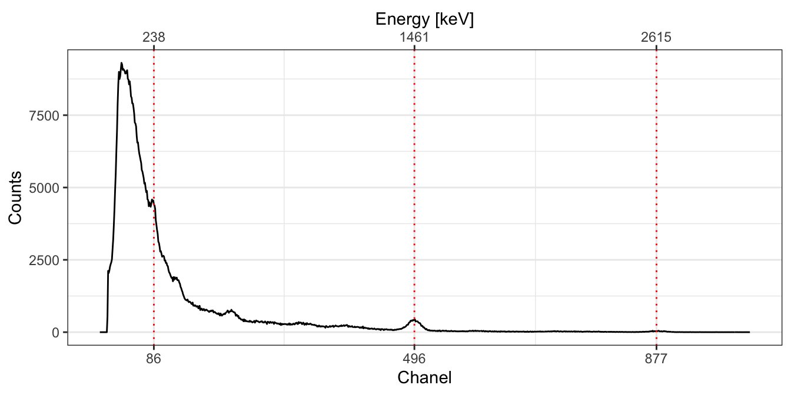

CEREGE Calibration Curve - NaI #1
Canberra Inspector 1000
CEREGE Luminescence Team
2020-05-23
Source:vignettes/cerege_1.Rmd
cerege_1.RmdImport Files
# Import CNF files for calibration # Skip the first chanels spc_dir <- system.file("extdata/AIX_NaI_1/calibration", package = "gamma") (spc <- read(spc_dir)) #> A collection of 5 gamma spectra: BRIQUE, C341, C347, GOU, PEP # Import CNF files for background measurement bkg_dir <- system.file("extdata/AIX_NaI_1/background", package = "gamma") (bkg <- read(bkg_dir)) #> Gamma spectrum: #> * name: PB #> * date: 2019-03-27 12:06:02 #> * live_time: 7707.42 #> * real_time: 7714.93 #> * chanels: 1024 #> * energy_min: -7 #> * energy_max: 3124.91
Energy Scale Calibration
Reference Spectra
bsl <- spc %>% slice_signal(-1:-40) %>% stabilize_signal(sqrt) %>% smooth_signal(method = "savitzky", m = 21) %>% remove_baseline()
BRIQUE
# Spectrum pre-processing and peak detection pks <- find_peaks(bsl[["BRIQUE"]]) # Set energy values set_energy(pks) <- c(238, NA, NA, NA, 1461, NA, NA, 2615) # Recalibrate the energy scale BRIQUE <- calibrate_energy(spc[["BRIQUE"]], pks)

C341
# Spectrum pre-processing and peak detection pks <- find_peaks(bsl[["C341"]]) # Set energy values set_energy(pks) <- c(238, NA, NA, NA, 1461, NA, 2615) # Recalibrate the energy scale C341 <- calibrate_energy(spc[["C341"]], pks)

C347
# Spectrum pre-processing and peak detection pks <- find_peaks(bsl[["C347"]], span = 10) # Set energy values set_energy(pks) <- c(238, NA, NA, NA, NA, 1461, NA, 2615) # Recalibrate the energy scale C347 <- calibrate_energy(spc[["C347"]], pks)

GOU
# Spectrum pre-processing and peak detection pks <- find_peaks(bsl[["GOU"]]) # Set energy values set_energy(pks) <- c(238, NA, NA, NA, 1461, NA, NA, 2615) # Recalibrate the energy scale GOU <- calibrate_energy(spc[["GOU"]], pks)
PEP
# Spectrum pre-processing and peak detection pks <- find_peaks(bsl[["PEP"]]) # Set energy values set_energy(pks) <- c(238, NA, NA, NA, 1461, NA, NA, 2615) # Recalibrate the energy scale PEP <- calibrate_energy(spc[["PEP"]], pks)

Background Spectrum
# Pb212, K40, Tl208 lines <- data.frame( chanel = c(86, 496, 870), energy = c(238, 1461, 2615) ) bkg_scaled <- calibrate_energy(bkg, lines = lines)
Signal Integration
spc_scaled <- list(BRIQUE, C341, C347, GOU, PEP) spc_scaled <- methods::as(spc_scaled, "GammaSpectra")
Count Threshold
# Integration range (in keV) Ni_range <- c(200, 2800) # Integrate background spectrum (Ni_bkg <- integrate_signal(bkg_scaled, range = Ni_range, energy = FALSE)) #> value error #> 1.40046864 0.01906326 # Integrate reference spectra (Ni_spc <- integrate_signal(spc_scaled, range = Ni_range, background = Ni_bkg, energy = FALSE, simplify = TRUE)) #> value error #> BRIQUE 209.2953 0.2135497 #> C341 87.7405 0.2249214 #> C347 150.6917 0.2929845 #> GOU 170.0013 0.3105710 #> PEP 264.7712 0.3969934
Energy Threshold
# Integration range (in keV) NiEi_range <- c(200, 2800) # Integrate background spectrum (NiEi_bkg <- integrate_signal(bkg_scaled, range = NiEi_range, energy = TRUE)) #> value error #> 1108.0565661 0.5362181 # Integrate reference spectra (NiEi_signal <- integrate_signal(spc_scaled, range = NiEi_range, background = NiEi_bkg, energy = TRUE, simplify = TRUE)) #> value error #> BRIQUE 110923.34 4.933826 #> C341 46657.02 5.215421 #> C347 81717.33 6.843667 #> GOU 89644.92 7.152993 #> PEP 139711.03 9.136525
Calibration Curve
Summary
# Get reference dose rates data("clermont") doses <- clermont[, c("gamma_dose", "gamma_error")] # Metadata info <- list( laboratory = "CEREGE", instrument = "InSpector 1000", detector = "NaI", authors = "CEREGE Luminescence Team" ) AIX_NaI <- fit_dose( spc_scaled, background = bkg_scaled, doses = doses, range_Ni = Ni_range, range_NiEi = NiEi_range, alpha = 0.05, details = info ) # Summary summarise(AIX_NaI) #> --- Ni ------------------------------------------------------------------------- #> Residuals: #> 1 2 3 4 5 #> 33.402986 7.968894 6.460507 -18.670747 78.089036 #> #> Coefficients: #> Estimate Std. Error #> Intercept 40.013121 41.8531813 #> Slope 9.140417 0.2721024 #> #> MSWD: 0.893809 on 3 degrees of freedom, p-value: 0.443393 #> #> --- NiEi ----------------------------------------------------------------------- #> Residuals: #> 1 2 3 4 5 #> 33.906630 12.519006 -21.932843 -8.121213 86.160947 #> #> Coefficients: #> Estimate Std. Error #> Intercept 27.88537142 4.202826e+01 #> Slope 0.01735135 5.142132e-04 #> #> MSWD: 0.937507 on 3 degrees of freedom, p-value: 0.421443 # Plot curve plot(AIX_NaI, threshold = "Ni") + ggplot2::theme_bw() plot(AIX_NaI, threshold = "NiEi") + ggplot2::theme_bw()


R session
#> R version 4.0.0 (2020-04-24)
#> Platform: x86_64-apple-darwin17.0 (64-bit)
#> Running under: macOS Catalina 10.15.4
#>
#> Matrix products: default
#> BLAS: /Library/Frameworks/R.framework/Versions/4.0/Resources/lib/libRblas.dylib
#> LAPACK: /Library/Frameworks/R.framework/Versions/4.0/Resources/lib/libRlapack.dylib
#>
#> locale:
#> [1] en_US.UTF-8/en_US.UTF-8/en_US.UTF-8/C/en_US.UTF-8/en_US.UTF-8
#>
#> attached base packages:
#> [1] stats graphics grDevices utils datasets methods base
#>
#> other attached packages:
#> [1] magrittr_1.5 gamma_0.2.0
#>
#> loaded via a namespace (and not attached):
#> [1] Rcpp_1.0.4.6 compiler_4.0.0 pillar_1.4.4 tools_4.0.0
#> [5] digest_0.6.25 evaluate_0.14 memoise_1.1.0 lifecycle_0.2.0
#> [9] tibble_3.0.1 gtable_0.3.0 pkgconfig_2.0.3 rlang_0.4.6
#> [13] yaml_2.2.1 pkgdown_1.5.1.9000 xfun_0.14 rxylib_0.2.4
#> [17] stringr_1.4.0 knitr_1.28 desc_1.2.0 fs_1.4.1
#> [21] vctrs_0.3.0 rprojroot_1.3-2 grid_4.0.0 glue_1.4.1
#> [25] R6_2.4.1 rmarkdown_2.1 ggplot2_3.3.0 farver_2.0.3
#> [29] IsoplotR_3.3 backports_1.1.7 scales_1.1.1 htmltools_0.4.0
#> [33] ellipsis_0.3.1 MASS_7.3-51.5 assertthat_0.2.1 colorspace_1.4-1
#> [37] labeling_0.3 stringi_1.4.6 munsell_0.5.0 crayon_1.3.4